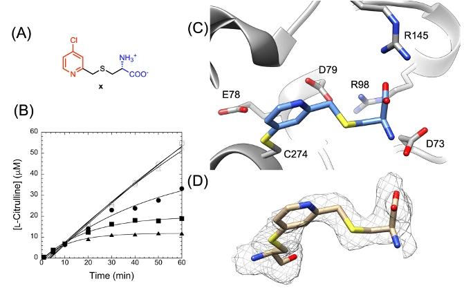
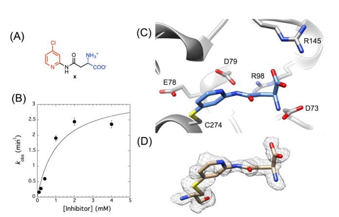
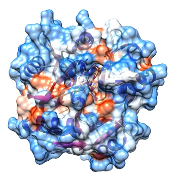

Context
Human dimethylarginine dimethylaminohydrolase (hDDAH1) removes methylarginines that accumulate and inhibit nitric-oxide production. It is a cardiovascular drug target.
Dr. Fast's team developed a switchable electrophile strategy for a potent and selective covalent inhibitor. I solved inhibitor-bound structures to guide the design.
What I did
- Crystallized hDDAH1 with covalent inhibitor series members.
- Determined inhibitor-bound structures at the active-site cysteine.
- Analyzed time-dependent inhibition and the switchable electrophile mechanism.
- Fed structural information back into the medicinal chemistry design cycle.
Key results
- Target
- hDDAH1Cardiovascular disease
- Inhibitor class
- CovalentSwitchable electrophile
- Structural series
- MultipleInhibitor-bound crystals
- The inhibitor forms a covalent bond at the active-site cysteine.
- The structures reveal the binding mode and the basis for selectivity.
- The switchable electrophile provides a route to potent, selective hDDAH1 inhibition.
Figures



Collaborators

Dr. Walter Fast
Principal Investigator
University of Texas at Austin
Dr. Alfred Tuley
Chemical biology collaborator
University of Texas at Austin
Output
Source and disclosure. Adapted from Dr. Zheng's April 2024 research summary. The project was a structure-based drug-design collaboration with the Fast lab.